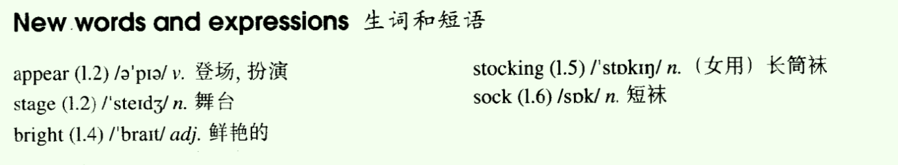
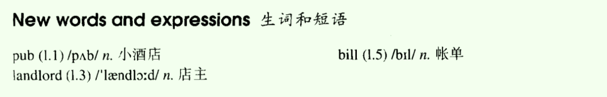
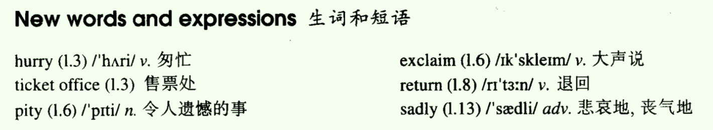
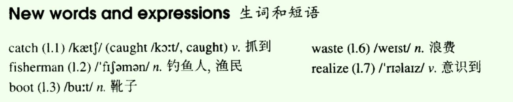
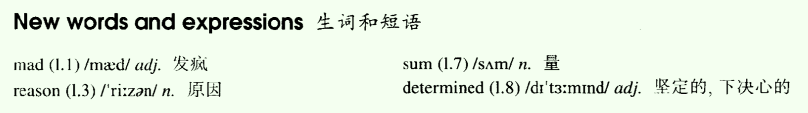
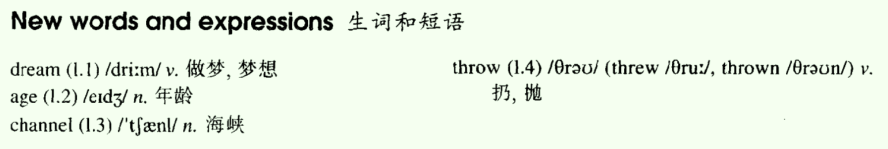
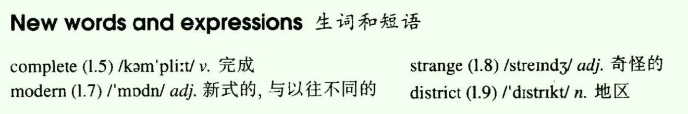
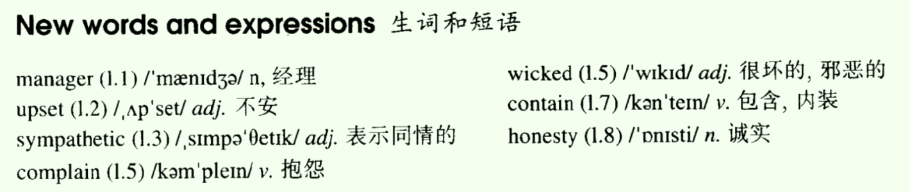

- Lesson 17 Always young
- Lesson 18 He often does this!
- Lesson 19 Sold out
- Lesson 20 One man in a boat
- Lesson 21 Mad or not?
- Lesson 22 A glass envelope
- Lesson 23 A new house
- Lesson 24 It could be worse
Lesson 17 Always young
一、单词讲解
1、appear：v.登场，扮演；出现；
- disappear：v.消失；
- agree/disagree
- appearance：n.出现，外貌；
- Don't judge a man by his appearance.
2、stage：n.舞台
- on the stage
- stage fright：怯场；fright：害怕；
3、bright：adj.鲜艳的；光明的；聪明的；
- bright colour（color）
- bright future/prospect
- bright ideas
- The little boy is really bright.
All

二、课文&语法讲解
1、本文重点
- 情态动词 must（两种用法）
2、情态动词
- must用法
- a. 表示推测；
- b. 表示不可避免的义务；
- 词性至关重要。
- 情态动词还是动词，所以可以做谓语；但是它不是普通的动词，它不表示动作，它表示情态（情绪、态度、情感）；
- 情态动词不能单独使用，后面必须加实实在在的动词的原形；
- 情态动词通常没有人称的变化；
- 一个普通的动词会有很多时态（16种，如一般过去时、一般现在时、过去进行时、现在进行时...），情态动词的时态通常有现在时和过去时2种时态；
- must：只有现在时一种，没有过去时；
- may、might
- can、could
- will、would
- shall、should
- might、could、would、should有两种理解方式：a. 表示过去，当作“过去时”用；b. 不表示过去，而是表示“现在时”更委婉的语气；
- 情态动词变否定、疑问：没有实在动作，直接后面加not，直接提前；
- must用法
- a. 表示推测（通常表示可能性最高、把握最大、几乎接近事实的推测，所以翻译成“肯定、一定”）；
- a) 推测现在：must + 原形（比如must be、must do）；
- She must be 35 years old.
- 对比：She is 35 years old. 表示的是确定、事实；
- She must be the new teacher.
- He looks pale. He must be ill.
- b) 推测过去：现在完成时也可以表示过去的事，所以must + have done表示推测过去；
- It must have rained last night.
- She must have cried just now.
- a) 推测现在：must + 原形（比如must be、must do）；
- b. 表示不可避免的义务，翻译成“必须”；
- I must do it now. 表示现在的“必须”；
- She must do it now.
- You must do it tomorrow. 表示将来的“必须”；
- must通常不用于过去的时态，若还想表示过去的“必须”，可以换成have to；（must与have to同义，差异：have to可以不同时态、人称的变化，时态更灵活些）
- I have to do it now. 表示现在的“必须”；
- She has to do it now.
- You will have to do it tomorrow. 表示将来的“必须”；
- They had to do it yesterday. 表示过去的“必须”；
- a. 表示推测（通常表示可能性最高、把握最大、几乎接近事实的推测，所以翻译成“肯定、一定”）；
- must用法
3、课文
- Why doesn't Aunt Jennifer tell anyone how old she is?
- She must be at least thirty-five years old.
- In spite of this, she often appears on the stage as a young girl.
- in spite of：表示尽管...；of是介词，后面不接句子，接一个词（比如名词、代词）；
- though、although、even though：是连词，后面接句子；
- Jennifer will have to take part in a new play soon.
- soon：不久的将来；
- will have to可以帮助大家更明确地确定时态，将来的“必须”；
- This time, she will be a girl of seventeen.
- In the play, she must appear in bright red dress and long black stockings.
- must这里表示必须；
- in表示“穿着”；in后面加衣服、颜色，都表示穿着衣服；
- Last year in another play, she had to wear short socks and a bright, orange-coloured dress.
- orange-coloured：橘红色的；
- If anyone ever ask her how old she is, she always answers, 'Darling, it must be terrible to be grown up!'
三、知识扩展
- 1、情态动词must
- I can't boot my computer now. Something must be wrong with its operation system.
- something is wrong.
- Investigators agreed that passengers on the airliner C at the very moment of the crash. （airliner：班机）
- A. should have died；B. must be dying；C. must have died；D. ought to die；
- the very moment of：在...时刻；
- should、ought to在英语中通常表示责任、义务，不表示推测，尽管中文的意思是应该...
- Primary among the arguments against uniforms is their lack of variety and the consequent loss of individuality experienced by people who must wear them.
- One of the more difficult things many students must adjust to in the states is the notion that time must be saved whenever possible and used wisely every day.
- I can't boot my computer now. Something must be wrong with its operation system.
Lesson 18 He often does this!
一、单词讲解
1、landlord：n.店主、房东、业主、老板；
- landowner：n.；
2、bill：n：账单、单据、清单、钞票、法案、广告；
- pay the bill
- US dollar bills
- a crime bill
- a bill board：广告的看板；后来引申为bill board：歌曲的排行榜；
All

二、课文&语法讲解
1、本文重点
- have的用法：实义动词、助动词
2、have的用法
- 1) 含义
- a. 实义动词（有实实在在动作含义的动词）
- "有"（同义词：own/possess）
- I have a book.、She has a car.、He had a surprise.
- "吃喝玩乐做"
- have a meal、have breakfast、have some water
- have fun、have a good time
- have a swim（直接翻译成“游泳”就完了，不要翻译成“做了/有一个游泳”）
- "有"（同义词：own/possess）
- b. 助动词（完成时态中；没有实实在在的含义，起到帮助的作用，构成完成时态）
- have/has + done、had + done
- I have received a letter.
- She has bought a gift.
- He had left. （leave）
- have/has + done、had + done
- a. 实义动词（有实实在在动作含义的动词）
- 2）含义不同，变否定疑问也不同
- 实义动词
- I have a book.
- I do not have a book.
- Do I/you have a book?
- She has lunch.
- She does not have lunch.
- He had a good time.
- He did not have a good time.
- 助动词
- I have received a letter.
- I have not received a letter.
- Have I/you received a letter?
- She has bought a gift.
- She has not bought a gift.
- He had left.
- He had not left.
- 实义动词
- 3）补充
- 表示“有”，have【实义动词】（美式）= have got【助动词】（英式）
- You have a lot of money. = You have got a lot of money
- do not have、have not got
- You have a lot of money. = You have got a lot of money
- have/has had、had had：就是have这个动词的完成时态
- I had had lunch at a village.
- 第一个had用于构成过去完成时，第二个had是have动作的过去分词
- We have had trouble with the plan.
- It has had not effect.
- I had had lunch at a village.
- 表示“有”，have【实义动词】（美式）= have got【助动词】（英式）
- 1) 含义
3、课文
- What had happened to the writer's bag?
- After I had had lunch at a village pub, I looked for my bag.
- have的过去完成时、一般过去时
- I had left it on a chair beside the door and now it wasn't there!
- beside the door：near、next to，在...旁边
- Besides this book, I have some others. 除了...，还有...
- As I was looking for it, the landlord came in.
- 'Did you have a good meal?' he asked.
- 'Yes, thank you,' I answered, 'but I can't pay the bill. I haven't got my bag.'
- The landlord smiled and immediately went out. In a few minutes he returned with my bag and gave it back to me.
- 'I'm very sorry,' he said. 'My dog had taken it into the garden. He often does this!'
三、知识扩展
- 1、have的方法
- He had a smoke after dinner. 抽一根烟
- My friend Bill has had a headache.
- Their guest room has two big windows.
- We had had a long vacation after that.
Lesson 19 Sold out
一、单词讲解
1、hurry：v.匆忙；
- hurry to the ticket office
- Hurry up!
- hurriedly：adv.匆忙地；
- do sth. hurriedly
2、pity：n.令人遗憾的事；
- 感叹名词用what；
- What a pity！
3、return：v.退回、回到；
- return the books
- return home
- n. 返回，回来；
- Sir, may I see your return ticket?
4、sadly：adv. 悲哀地、丧气地；
- sad：adj.
All

二、课文&语法讲解
1、本文重点
- 情态动词：may、can
2、情态动词：may、can
- Review：L17 情态动词
- may用法
- a. 表示推测（和must相比，可能性不一样，must可能性更高，may可能性更小，may翻译成“可能...”）；
- may和must一样，可以推测现在（may + 原形），也可以推测过去（may+ have done）；
- The play may begin at any moment.
- It may have begun already.
- b. 表示请求允许（疑问句，询问别人的意见，翻译成“可以”；此时may只能搭配人称I）；
- _ May I come in ?
- c. 表示允许（陈述句，翻译成“可以”；此时may不限制只搭配人称I了）；
- You may come in and have something to drink.
- a. 表示推测（和must相比，可能性不一样，must可能性更高，may可能性更小，may翻译成“可能...”）；
- might用法（和may一样），两种含义：
- a. may的过去；
- b. 不表示may的过去，表示现在的比may更委婉的语气；
- can用法
- a. 表示能力，能够...；
- Trust yourself! you can do it.
- b. 表示请求允许（和may一样，但是不限制人称）；
- A： Can I help you?/ What can I do for you?
- c. 表示允许（和may一样）；
- B. You can help me to find my size.
- d. 表示推测（通常使用的是否定形式，表示不可能）；
- He is abroad. It can't be him.
- a. 表示能力，能够...；
- could用法（和can一样）：与might/may同理；
3、课文
- When will the writer see the play?
- 'The play may begin at any moment,' I said.
- 'It may have begun already,' Susan answered.
- I hurried to the ticket office.
- ' May I have two tickets please?' I asked.
- have：词本无意，意由境生；这里翻译成“买”；
- 'I'm sorry, we've sold out,' the girl said.
- we've = we have
- ' What a pity !' Susan exclaimed.
- Just then, a man hurried to the ticket office.
- ' Can I return these two tickets?' he asked.
- 'Certainly,' the girl said.
- I went back to the ticket office at once.
- ' Could I have those two tickets please?' I asked. 语气更委婉
- 可以使用"I can/I could"回答，但感觉回答勉强；
- 口语中更倾向回答更干脆利落，让人感觉更痛快直接，使用certainly、sure、why not；
- 'Certainly,' the girl said, 'but they're for next Wednesday's performance. Do you still want them?'
- 'I might as well have them,' I said sadly.
- may可以，as well也；
- may as well ...：...做也可以，也不妨这样做；表示比较勉强的语气；
三、知识扩展
- 1、情态动词may/might、can/could
- may as well
- This TV program is quite bring. we might listen to the music as well（不妨听听音乐）.
- Some studies suggest that straight, horizontal bars painted across roads can initially cut the average speed of divers in half.
- Unless we spend money to spot and prevent asteroids（小行星）now, one may crash into Earth and destroy life as we know it, say some scientists.
- You may/might/can/could want to think twice about posting your resume on a site that automatically shares your information with others. You may/might/can/could be opening yourself up to unwanted calls from solicitors（推销员）.
- may/might/can/could：都可以表示“允许、可以”
- want to think：再想一次，深思熟虑
Lesson 20 One man in a boat
一、单词讲解
1、catch：v.抓到；（抓住实实在在的东西，或者抽象的东西，比如寒冷）
- catch fish
- catch fire：着火
- catch a bus：赶车
- catch a cold：感冒
- catch、caught、caught
2、waste：n.浪费；
- It's a waste of time/money/food.
- v.浪费；
- Don't waste your time.
- Wasting your time is wasting your life.
- 每天2个小时，一年750个小时（一个月）；
- recyclable：可回收的
- other waste：其他垃圾
All

二、课文&语法讲解
1、动名词（doing）
- 来源：为了解决早期词汇不够用，就地取材，还好记忆；动词+ing当做名词来用（do动词，doing动名词）；
用法（有很多种，这里只介绍2种）：
- a. 做主语；
Fishing (fish) is my favourite sport.
b. 放在介词后，做宾语；
- 介词后面可以接名词、代词、动名词；
- I often fish for hours without catching (catch) anything.
2、课文
- Why is fishing the writer's favourite sport?
- Fishing is my favourite sport. 动名词
- I often fish for hours without catching anything.
- without catching anything：介宾，宾语为动名词；
- 动名词也有动词的特性（可以有直接的宾语）；
- But this does not worry me.
- worry sb：v.令某人担心
- Some fishermen are unlucky.
- un-：unhappy、unpleasant、unimportant、uninteresting
- Instead of catching fish, they catch old boots and rubbish.
- instead of ...
- catch fish
- I am even less lucky.
- less lucky：比较级，更少的幸运，更加不幸；
- even：表示甚至...，放在比较级前面，用于加强语气的；
- I never catch anything -- not even old boots.
- After having spent whole mornings one the river, I always go home with an empty bag.
- After为介词，After having spent whole mornings one the river为介宾结构作状语，所以having spent为动名词的完成式；
- having done（特殊的动名词形式，have done完成时 + 动名词）
- a. 当做名词来用；
- b. 又有完成时的特点（强调之前）；
- 注意：动名词和现在分词的四种形式一样；
- 'You must give up fishing!' my friends say.
- must：L 17
- give up sth./doing（up是介词，后面加接名词、代词、动名词doing）
- give up smoking
- 'It's a waste of time.'
- But they don't realize one important thing.
- I'm not really interested in fishing.
- be interested in doing sth
- I am only interested in sitting in a boat and doing nothing at all!
三、知识扩展
- 1、doing
- Playing is my favorite sport.
- Playing tennis is favorite sport.
- Playing tennis with my friends is favorite sport.
- Playing tennis with my friends every Sunday is favorite sport.
- It is my favorite sport playing tennis with my friends every Sunday.
- to do、doing都可以往后放，使用it形式主语；
- He sat there. He didn't say anything.
- He sat there without saying anything.
- She went out of the shop. (without) She didn't pay the bill.
- She went out of the shop without playing the bill.
- She was afraid. (of) She did't spend the night alone.
- She was afraid of spending the night alone.
- Think carefully. (before) Answer my question.
- Think carefully before answering my question.
Lesson 21 Mad or not?
一、单词讲解
1、mad：adj. 发疯、非常生气的、疯狂的迷恋；
- I know I was wrong. Please don't be mat at me.
- go mad：变疯了（主动的）
- drive sb. mad：将某人逼疯
- His behavior really drives me mad.
- drive、drove、driven
2、reason：n. 原因；
- for some reasons：因为一些、许多原因；
- for some reason：因为某种原因；
- some：
- a. 一些、许多，（后面加可数名词复数、不可数名词）
- b. 某一个、某一种，（后面加可数名词单数）
- for one reason or another：因为种种原因；
- reasonable：adj. 合理的；
- unreasonable：adj.
3、sun：n. 量；
- a large sum of money
- to sum up：总之
4、determined：adj. 坚定的、下定决心的；
- be determined to do sth.
- He is determined to go abroad for further education.
- We are determined to hold on the last. 我们下定决心去坚持到最后。
All

二、课文&语法讲解
1、本文重点
- 被动语态（与时态、情态相结合）
- doing/done修饰名词，（分词）作定语
2、被动语态（与时态、情态相结合）
- ... passing planes can be heard night and day.
- 被动语态： be + done；
- be：被动的时间、主语的单复数；
- done：被动的动作；
- 与时态相结合；
- He is beaten every day.
- He was beaten yesterday.
- He will be beaten tomorrow.
- He is being beaten. 他现在正在被打。
- He has been beaten. 他现在已经被打了。
- Our morning paper is read (read) by over 200, 000 people very day.
- Last night my favorite TV program was interrupted (interrupt) by a special new bulletin.
- His bike will be repaired (repair) by his grandfather.
- The new machine has been used (use) in our factory for two weeks.
- 被动语态与情态动词相结合；
- Planes are heard.
- Planes can be heard. 能被听见
- planes could be heard. 过去能被听见
- planes may be heard.
- planes must be heard.
- 这封信必须马上寄出。
- The letter must be sent immediately.
- 天气不能被人们所控制。
- The/无 Weather cannot be controlled by people.
- 西红柿可以做菜或是生吃；
- Tomatoes may be cooked or eaten raw.
- 我的钥匙肯定落在什么地方了。
- My keys must be left somewhere.
3、课文
- Why do people think the writer is mad?
- Aeroplanes are slowly driving me mad.
- I live near an airport and passing planes can be heard night and day.
- passing planes：passing为现在分词，起形容词作用，修饰planes；
- The airport was built years ago, but for some reason it could not be used then. 没有能够被使用
- Last year, however, it came into use.
- come into：进入某种状态
- come into use：启用
- Over a hundred people must have been driven way from their homes by the noise.
- must have done + be done =》 must have been done：推测过去的被动
- My cell phone must have been stolen.
- His keys must have been lost. lose
- ... the wallet must have been found by one of the ....
- drive way：赶走、逼走
- I am one of the few people left.
- Sometimes I think this house will be knocked down by a passing plane.
- I have been offered a large sum of money to go away, but I am determined to stay here.
- Everybody says I must be mad and they probably right.
4、passing planes
- 修饰名词的都叫定语；
- doing：修饰名词，（现在分词）作定语；通常表示主动、正在进行；
- a waiting car
- a sleeping baby
- boiling water
- a developing country
- 通常doing词短的话（一个词的），放在名词前面，长的话可以放在后面；
- a women wearing a white coat
- 英语中，通常长的内容放到后面；
- done：修饰名词，（过去分词）作定语；通常表示被动、已完成；
- used cars
- wasted time
- a deserted car park
- a ploughed field
- a developed country
- a car park deserted by government
- a car called Blue Bird
- the few people left （特殊，放在后面，类似的还given）被落下的人
三、知识扩展
- 1、被动语态
- The letters for the boss A on his desk but he didn't read them until three days later.
- A. were put；B. was put；C. put；D. has put；
- Have you heard about the fire in the market?
- Yes, fortunately no one B.
- A. hurt；B. was hurt；C. has hurt；D. had been hurt；
- The way the guests B in the hotel influenced their evaluation of the service. 定语从句
- A. treated；B. were treated；C. would treat；D. would be treated；
- 过去完成时更好：had been treated（过去的之前）
- Don't worry. The hard work that you do now A later in life.
- A. will be repaid；B. was being repaid；C. has been repaid；D. was repaid；
- After school we went to the reading-room to do some reading, only to be told that it D.
- A. was decorated；B. had decorated；C. had been decorating；D. was being decorated；
- They are living with their parents for the moment because their own house A.
- A. is being rebuilt；B. has been rebuilt；C. is rebuilt；D. has rebuilt；
- In the last few years thousands of films B all over the world.
- A. have produced；B. have been produced；C. are producing；D. are being produced；
- I like these English songs and they D many times on the radio.
- A. taught；B. have taught；C. are taught；D. have been taught；
- The letters for the boss A on his desk but he didn't read them until three days later.
Lesson 22 A glass envelope
一、单词讲解
1、dream：v. 做梦、梦想（dreamed/dreamt两种写法，learn同类）
- I always dream of/about flying like a bird.
- n. 梦、梦想；
- One World One Dream
- I have a dream ... -- Martin Luther King
- I dreamed a dream in time gone by ...
- Your future depends on your dreams. So go to sleep.
2、age：n. 年龄，时代；
- the Ice Age 冰川时代
3、channel：n. 海峡；频道；
- the channel、the English Channel、the British Channel
All

二、课文&语法讲解
1、修饰比较级
- 比较级有缺陷，无法说明变化的幅度；可以使用
修饰比较级的词来说明； - 幅度小：a little(bit)
- a little more
- 幅度大：much / a lot / far
- even：不能体现幅度，但是表示突出强调，“甚至...”
- 比较级有缺陷，无法说明变化的幅度；可以使用
2、课文
- How did Jane receive a letter from a stranger?
- My daughter, Jane, never dreamed of receiving a letter from a girl of her own age in Holland.
- receiving a letter：动名词，作介词of的宾语；动名词也有动词的特性（可以有直接的宾语），a letter；
- Last year, we were traveling across the Channel and Jane put a piece of paper with her name and address on it into a bottle.
- 过去进行时叙述故事情节的背景；
- across：表面横穿
- through：内部横穿
- put A into B
- with：prep. “伴随着有...，和...一起”
- with + n. (+介词短语 表示位置)
- a purse/wallet with 200 dollars in it
- a bus with 500 people on it
- She threw the bottle into the sea.
- throw、threw、thrown
- She never thought of it again, but ten months later, she received a letter from a girl in Holland.
- think of ...
- Both girls write to each other regularly now.
- However, they have decided to use the post office.
- Letters will cost a little more, but they will certainly travel faster.
- cost：主语不能是人，必须是事、物；
三、知识扩展
- 1、荷兰
- Holland、the Netherlands、Dutch
- go Dutch（split the bill）：AA制
- Dutch courage：酒后的勇气
- If I cheat you, I am a Dutch!
Lesson 23 A new house
一、单词讲解
1、complete：v. 完成；
- complete / finish the work
- a few cars completed the race.
- adj. 完整的；
- He told us a complete story.
2、strange：adj. 奇怪的；
- We heard a strange sound.
- The modern building looks strange to some people.
- stanger：n. 陌生人；
3、district：n. 地区；
- CBD = Central Business District
All

二、课文&语法讲解
1、There be句型
- 表示"有"（不是拥有的有，是客观存在的有），该句型其实是一个倒装句；
- There be + n.
- There is a girl.
- A girl is there.
- There be + n. + 介词短语（通常是地点位置）
- There is a girl in the classroom.
- There be句型的时态：想表示什么时间的“有”，将be变成不同的时态；
- There is / was / will be /...
- There be句型的be：可以有单复数，单复数由主语决定，主语在后面（倒装句）；
- There was a book on the table.
- There were many books on the table.
2、课文
- Why is the new house special?
- I had (have) a letter from my sister yesterday.
- She lives (live) in Nigeria.
- In her letter, she said that she would come / were going to come (come) to England next year.
- If she comes (come), she will get a surprise.
- surprise这里表示“使人惊奇、意外的事物”，是可数名词；
- We are now living (live) in a beautiful house in the country.
- Work on it had begun (begin) before my sister left.
- 这里work为名词，作主语；it指代房屋；
- The house was completed (complete) five months ago. 时态 + 语态
- In my letter, I told her that she could (can) stay with us.
- The house has many large rooms and there is a lovely garden.
- It must be the only modern house in the district.
三、知识扩展
- 1、简单句
- n. + v.
- 主语 + 谓语
- 为了将一件事说得更充分具体，从谓语动词入手：时态、语态、情态；
- 时态：
- 一般现在时（L2）：do/does
- 一般过去时（L3）：did
- 一般将来时（L12）：will/shall do、am/is/are going to do
- 现在进行时（L2）： am/is/are doing
- 过去进行时（L7）： was/were doing
- 将来进行时（L3）： will/shall be doing
- 现在完成时（L4、L5）： have/has done
- 过去完成时（L7、L9、L14）： had done
- 过去将来时（L7、L9）：would do、was/were going to do
- 被动语态（L10、L21）：
- be + done
- 情态动词：
- must（L17）：a. 肯定的推测（现在must be、过去must have done）；b. 必须；
- may（L19）：a. 可能性小的推测；b. 请求允许；c. 允许；
- can（L19） ：a. 能力；b. 请求允许；c. 允许；d. 推测（否定结构，cannot不可能）
- n. + v.
Lesson 24 It could be worse
一、单词讲解
1、upset：adj. 不安；
- be upset
- feel upset
- I felt upset last night.
2、complain：v. 抱怨；
- complain about ...
- He always complains about the weather.
3、contain：v. 包含、内装；
- The envelope contained $50.
- inclue：v. 包含（抽象的）
- The list included 500 people.
4、honesty：n. 诚实；
- 抽象名词不可数，当成单数使用；
- honest：adj. 诚实的；
- an honest man（h不发音）
All

二、课文&语法讲解
- 1、课文
- It could be worse：直译“情况可能更糟”，但是没有更糟，则译成了“不幸中的万幸”；
- Had the writer's money been stolen?
- I entered the hotel manager's office and sat down.
- I had just lost ￡50 and I felt very upset.
- 'I left the money in my room,' I said, 'and it's not there now.'
- leave：v.离开、留下；离开即是留下，从不同的角度看；
- leave、left、left
- The manager was sympathetic, but he could do nothing.
- 'Everyone 's losing money these days,' he said.
- 现在进行时：am/is/area + doing
- 用现在进行时表示不断重复的动作，其中常含有埋怨的意思；
- He started to complain about this wicked world but was interrupted by a knock at the door. （knock：v.、n.）
- start/begin to do sth. = start/begin doing sth.
- complain about ...
- be interrupted by ...
- A girl came in and put an envelope on his desk.
- It contained ￡50.
- 'I found this outside this gentleman's room,' she said.
- ' Well,' I said to the manager,' there is still some honesty in this world!'
- 口语中，尤其是说话的最前面，不表示“好”，是发语词，相当于中文的“嗯...”
- There be句型：表示“有（客观存在）”；
- have：表示拥有的关系；
- 扩展结构：
- There be +n. + 介词短语
- There be + n. + doing
- There is a girl crying.
- There is a girl crying in the classroom.
- There were some people rowing on the river.
- There be + n.：确定be的时态、be体现主语（后面）的单复数，有多个主语采用就近原则，由第一个决定（比如有一个苹果、两个香蕉，使用is）；
- There is a problem.
- There was a problem.
- There will be a problem.
- There has been a problem.
- There were few people in the shop yesterday.
- There have been many problems in front of us.
三、知识扩展
- 1、简单句
- Girls play games.
- Girls are playing games.
- Lovely girls are playing games happily.
- Thousands of lovey girls are playing games very happily.
- After class thousands of lovey girls are playing games very happily on the playground.